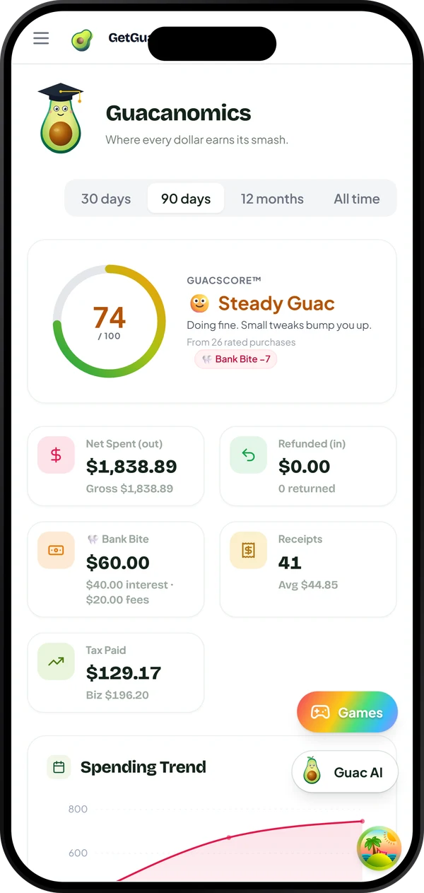

Guac-AI · personal finance assistant
Keep More Guac
Keep More Guac
in Your Pocket 🥑
GetGuac reads your receipts and bank statements, scores every purchase, sniffs out hidden fees, and shows you exactly where your money gets eaten. Money’s wingman. Keep your guac.
✓ Free forever✓ No card required✓ Delete anytime
 ↩ Return window foundbefore time runs out
↩ Return window foundbefore time runs out
🏦 No bank login
🔒 Encrypted
🗑 Delete everything
📱 iOS · Android · Web
The GetGuac circle
Every receipt makes the next trip smarter.
GetGuac remembers the shopping so you do not have to.
Less to remember
One photo. Nothing lost.
Receipts disappear in pockets, bags and inboxes. GetGuac gives every purchase one dependable home before life moves on.
- Paper and digital receipts together
- Searchable items instead of mystery totals
2 ways in
Photo scans and email receipts
Inside the GetGuac app
Receipt memorySavedReady whenever you need it
Real screens from the live app (demo data) — web and mobile.
Start the circle with one receipt.
See your purchases clearly, keep more of your money, and make the next trip a little smarter.
📷 Try 1 receipt✓ Free forever✓ No card required✓ Delete anytime